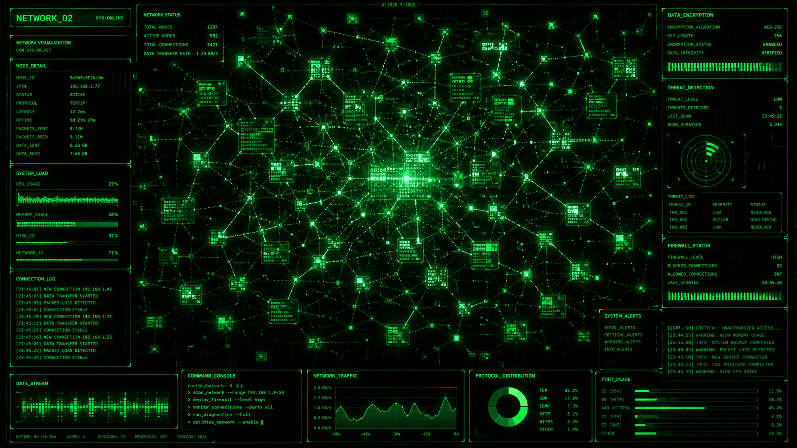
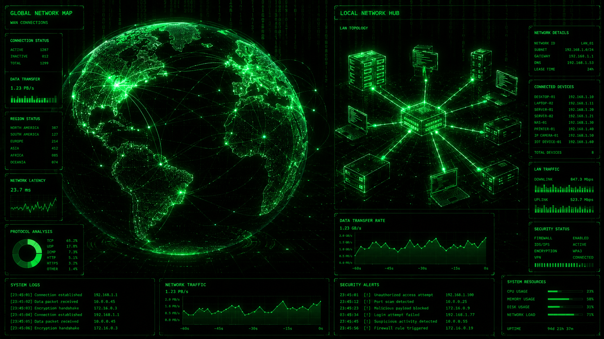
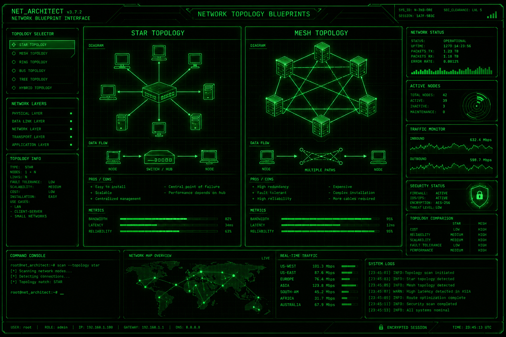

हैकिंग की दुनिया में एक बहुत पुरानी कहावत है: "You cannot hack a network if you don't know how it works." आज हम इंटरनेट के इस 'मैट्रिक्स' को एकदम बेसिक से डिकोड करेंगे।
1. Networking क्या है? (What is Networking?)
एकदम आसान भाषा में: जब दो या दो से ज़्यादा डिवाइस आपस में जुड़कर डेटा, फाइल्स या हार्डवेयर शेयर करते हैं, तो उस जुड़ाव को नेटवर्क कहते हैं।
2. Networking क्यों ज़रूरी है?
- Data Sharing: एक क्लिक में दुनिया के किसी भी कोने में फाइल भेजना।
- Resource Sharing: ऑफिस में 10 कंप्यूटर हैं, पर प्रिंटर एक ही है। नेटवर्किंग से 10 कंप्यूटर उसी प्रिंटर को यूज़ कर सकते हैं।
- Hacking Focus: बिना नेटवर्क के कोई हैकिंग नहीं हो सकती।
3. इतिहास (History of Networking)
- 1969 (ARPANET): अमेरिका की मिलिट्री ने दुनिया का पहला नेटवर्क बनाया था।
- 1983 (TCP/IP): इंटरनेट को बात करने की एक भाषा मिली।
- 1989 (WWW): टिम बर्नर्स-ली ने World Wide Web बनाया।
4. नेटवर्क के प्रकार (Types of Network)

- PAN: 10 मीटर के दायरे में (जैसे: फोन से कनेक्टेड स्मार्टवॉच)।
- LAN: बिल्डिंग या घर के अंदर (जैसे: वाई-फाई)।
- MAN: शहर को कवर करता है (जैसे: केबल टीवी)।
- WAN: दुनिया का सबसे बड़ा नेटवर्क (इंटरनेट खुद एक WAN है)।
5. डेटा ट्रांसफर से जुड़ी ज़रूरी शर्तें
- Bandwidth: पाइप की मोटाई। (मैक्सिमम कितना डेटा जा सकता है)।
- Throughput: असल में कितना डेटा आ रहा है।
- Latency (Ping): डेटा को पहुँचने में कितना टाइम लगा।
- Jitter: नेटवर्क की स्पीड में अचानक आने वाला उतार-चढ़ाव।
6. Topology (नेटवर्क का डिज़ाइन)

- Bus Topology: एक लंबी मेन केबल से सारे कंप्यूटर जुड़े होते हैं।
- Ring Topology: सारे कंप्यूटर गोल रिंग में जुड़े होते हैं।
- Star Topology: बीच में एक मेन डिवाइस (Switch) होता है, और सारे कंप्यूटर उससे जुड़े होते हैं। (99% यही यूज़ होती है)।
- Mesh Topology: हर कंप्यूटर बाकी सभी से सीधे तार से जुड़ा होता है। दुनिया की सबसे सुरक्षित टोपोलॉजी।
> END OF LOG // STAY TUNED FOR MISSION LOG 04: OSI MODEL.